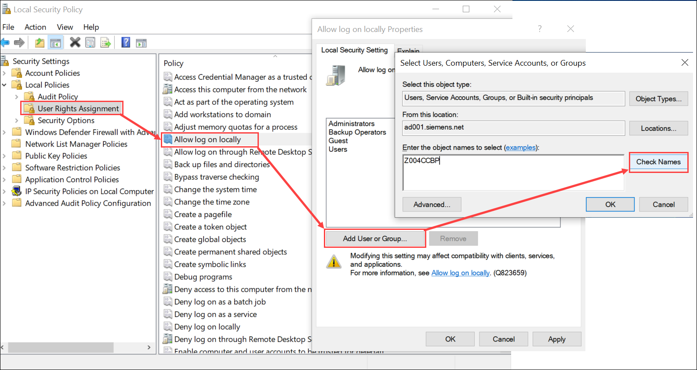

Cannot Create or Save Website
Problem: The website creation or save fails with a message.
Solution: The Domain user and Local user must have following policies set:
Case1: For Domain user
- Domain user must be present in the IIS_IUSRS group.
- Domain user must have Allow log on locally as Service right set. For detailed instructions, see topic, Setting Allow log on locally as a service right for a Windows local/domain user.
- Domain user must not be part of Deny log on Locally property on local security policy.
- Domain user must not be part of Deny access to this computer from the network property on local security policy.
Case 2: For Local user
- Local user must be present in the IIS_IUSRS group.
- Local user must have Allow log on locally as Service right set. For detailed instructions, see topic, Setting Allow log on locally as a service right for a Windows local/domain user.
- Local user must not be part of Deny log on locally property on local security policy.
- Local account group and Local user must not be part of Deny access to this computer from the network property on local security policy.
Setting Allow log on locally as a service right for a Windows local/domain user
To set Allow log on locally as a service right for a Windows local/domain user, do the following:
- From the Start menu, navigate to Control panel > Administrative tools > Local Security Policy.
- In the Local Security Policy window, expand the Local Policies node and select User Rights Assignment.
- In User Rights Assignment, navigate to the Allow log on locally as a service policy.
- Double-click Allow log on locally as a service. The Allow log on locally Properties window opens.
- Click Add User or Group.
- In the Select Users, Computers, Service Accounts, or Groups dialog box, type [Machine name\User name] and click Check Names and confirm.
- Click OK.

The Allow log on locally as a service right is set for the selected Windows local/domain user.